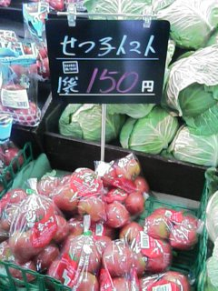

|
名前 鷲見 朱美 | 担当楽器 A.Sax | ||
| 出身：岐阜県岐阜市 | 出身高校：岐阜北 | |||
| 誕生日 6月7日 | 高校のときの部活： 吹奏楽 |
|||
| 好きなもの： チョコ、犬、グレープフルーツ |
苦手な物： 蚊 しいたけ 暑さ |
|||
| 一言 | 頑張ってます！ | |||
|  | 名前 伊藤 綾香 | 担当楽器 T.Sax | ||
| あだ名 せつこ | スタン ゲッツ | |||
| 好きな食べ物： チョコレート |
出身校 向陽高校 |
|||
| 血液型： B（他称AB） | 好きな音符： ♪ |
|||
| 一言 | サックス＝マイスウィートハニー | |||
|
|
名前 鈴木 雄大 | 担当楽器 T.Sax | ||
| 生年月日： S62年4月14日 |
血液型：AB | |||
| 出身：岐阜県瑞浪市 | 瑞浪市のすごい所： 地盤が固い。 |
|||
| 出身高校： 裕大さんといっしょ |
好きな食べ物： 昔は肉。最近サラダ。 |
|||
| 一言 | 名古屋工業大学2年。2年生だけど1年生です。 | |||
|
|
名前 若森 育也 | 担当楽器 B.Sax | ||
| Q.生まれ A.1989,1,29 岐阜 |
Q.出身高校 A.岐阜北高校 |
|||
| Q.高校の思い出 A.キューピーそっくりの銅像 |
Q.高校のときの部活 A.吹奏楽部。T.Sax |
|||
| Q.今一番欲しい物 A.ボケのアドリブ力と鋭いツッコミ |
Q.今二番目に欲しい物 A.バリトンの居場所 |
|||
| 一言 | 最近AM12:00～PM12:00が睡眠時間です。 | |||
|
|
名前 中村 祐香 | 担当楽器 ALTO SAX | ||
| 身長 １５５．２ｃｍ | 高校 岐阜北 | |||
| 血圧 低血圧 | 高校のとき 吹奏楽♪ | |||
| 好きなこと 買い物 | 甘いもの そんなに好きじゃない |
|||
| 一言 | この間ケーキバイキングに行きました。 | |||
|
|
名前 廣瀬 嵩大 | 担当楽器 T.Sax | ||
| 生まれ： 1988年10月19日 |
高校：岐阜北 | |||
| 見た目：ラグビー | 高校：バレー部 | |||
| 甘いもの：好き | 現在：ダイエット中 | |||
| 一言 | この間、ケーキバイキングに行きました。 | |||
|
|
名前 三輪 智佳 | 担当楽器 トランペット | ||
| 一宮市に住んでます | あだ名はフルネームです | |||
| 長い名字になりたいです | 物理の再試忘れてました | |||
| 物理落としました | 単位やばいです | |||
| 一言 | この前ケーキバイキングに行きました | |||
|
|
名前 津坂 ひかり | 担当楽器 Tp | ||
| Pちゃん | 出しん校 愛知淑徳高校 |
|||
| すきなもの 関根勤 |
きらいなもの 時間厳守 |
|||
| あこがれる人 フリーダムな人 |
流行 小島よしお |
|||
| 一言 | だれかどうぶつの森買ってください | |||
|
|
名前 佐藤誠也 | 担当楽器 トゥリランペィェット | ||
| 駒込ピペットで 目薬をさします。 |
||||
| 気付かずに昼夜連続で カレーを食べていることがあります。 |
||||
| 修学旅行でハウステンボス に行ったことがあります。 |
||||
| 一言 | レミ♯ファソミド | |||
|
|
名前 斉藤文哉 | 担当楽器 Tp | ||
| 座右の銘 他力本願 |
通り名 やとぅーっ |
|||
| 好きな次元 二次元 |
好きな装備 帽子 |
|||
| 好きな呪文 キアリー |
好きなレストラン ロイヤル・○スト |
|||
| 一言 | 愛は次元を超える！！ | |||
|
|
名前 前川 直之 | 担当楽器 Tb | ||
| 誕生日： 昭和最後の日 |
出身地 藤原京の辺り |
|||
| 学部： 工学部社会環境工学科 |
きらいな食べ物 アルデンテのスパゲッティ |
|||
| 好きな食べ物 やわらかくゆでたスパゲッティ |
ハイB♭が出たら がっきかいます |
|||
| 一言 | たのしく吹けるようにがんばります | |||
|
|
名前 近藤優人 | 担当楽器 Tb | ||
| 工学部 | 血液型 A型 |
|||
| あだ名 局長/勇（いさみ・新撰組の) |
好きな食べ物 果物 |
|||
| 好きな果物 メロン |
好きなメロン 夕張メロン |
|||
| 一言 | トロンボーン大好きですよ！！ | |||
|
|
名前 斎木真朗 | 担当楽器 Pf、ピアニカ | ||
| あだな：しんろう | メロディオン買いました。 | |||
| 飼い猫とまったり | 三度の飯よりこれが好き | |||
| ・・・ | ゾクッとする。 | |||
| 一言 | やばい | |||
|
|
名前 副島 敬正 | 担当楽器 Pf | ||
| よみ：そえじま たかまさ | 出身：長崎県 | |||
| 趣味：散歩とか様々に | 工学部 | |||
| 千種区在住 | その他：人生楽しく | |||
| 一言 | 頑張ります！！ | |||
|
|
名前 吉田莉奈 | 担当楽器 Gｔ | ||
| 通称 えつを | 特技 物まね、酒 | |||
| 出身校：向陽高校 | 萌え属性 ツンデレ | |||
| 口癖 めんどくせ | 将来の夢 芸人かニート | |||
| 一言 | JAZZとお酒が大好きです。 | |||
|
|
名前 小堀涼子 | 担当楽器 Bass | ||
| あだ名 こぼり | 高所恐怖症 | |||
| 出身校 向陽 | 元カレ クラリネット、エレベ |
|||
| ポジション 歩くネタ |
住処 中区 | |||
| 一言 | 目指せ、ベースでせつこ(T.Sax)とゴールデンペア | |||
|
|
名前 木田晶子 | 担当楽器 Bass | ||
| 出身地/徳島県 | あだな/キダム | |||
| ポジション/お母さん | 元カレ/三味線、尺八 | |||
| 趣味/スキップ | 作りたいお菓子/ミルフィーユ | |||
| 一言 | 目指せ！！ビール一杯！！ | |||
| 名前 鎌田拓郎 | 担当楽器 Bass | |||
| 出身：宮崎県 | 鹿児島のいいところ： 桜島 |
|||
| しゅみ：ひまつぶし | 好きなたべもの：肉じゃが | |||
| ビリーズブートキャンプ やってみたい |
目標：体脂肪率 １０％ | |||
| 一言 | がんばって来年は海外旅行に行きます。 | |||
|
|
名前 安井裕亮 | 担当楽器 ドラム | ||
| 学校：名工大 | 学部：工 | |||
| 血液型：AB | 特技：開脚前転 | |||
| 好きなもの：肉 | 嫌いな物：野菜 | |||
| 一言 | 大きくなりたい。 | |||